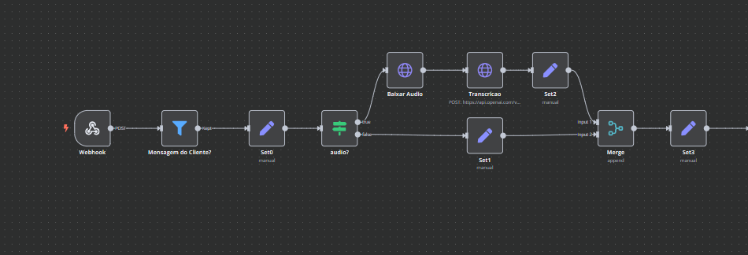
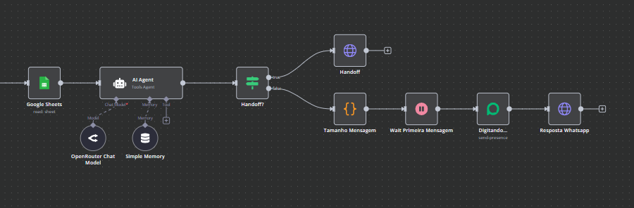

Agente de IA Secretário Virtual para Nutricionista
Automação de atendimento no WhatsApp com integração entre N8N, Evolution API e Chatwoot
Início
Uma nutricionista me procurou dizendo que a maior dor dela era lidar com o volume de mensagens no WhatsApp. Muitas vezes, no meio da rotina de atendimentos, as conversas desciam na tela e acabavam ficando sem resposta, o que prejudicava a experiência dos pacientes e gerava atrasos para marcar ou desmarcar consultas. A ideia era criar um agente virtual que pudesse assumir esse papel de secretária: responder dúvidas, enviar informações personalizadas sobre dietas e manter o atendimento ativo a qualquer hora do dia.
Desenvolvimento
O primeiro passo foi estruturar uma base de dados centralizada e fácil de atualizar. Optei pelo Google Sheets, mesmo sabendo que não é o banco de dados mais robusto, porque a aplicação não exigia grandes volumes de armazenamento e a nutricionista já estava acostumada a trabalhar com planilhas. Ali, registrei informações como nome e número de contato dos pacientes, dietas personalizadas e observações importantes, como “paciente bariátrico, evitar X alimento”.
Para orquestrar todo o fluxo, utilizei o N8N, que integrou a Evolution API (responsável pela gestão das mensagens no WhatsApp) e o Chatwoot, onde todas as conversas são centralizadas. O agente foi configurado para buscar respostas diretamente na planilha, garantindo mensagens rápidas e personalizadas. Se um paciente perguntasse “Qual a minha dieta desta semana?”, o sistema consultava seus dados e respondia instantaneamente. Quando surgiam perguntas que exigiam histórico ou contexto de consultas anteriores, como “Você lembra o que conversamos na última consulta?”, o agente acionava o handoff e transferia a conversa para que a nutricionista respondesse diretamente no Chatwoot.
Fluxo N8N
Na primeira parte do fluxo, a mensagem chega pelo WhatsApp através do nó Webhook. Em seguida, o nó Filter verifica se a mensagem foi enviada por um cliente. Os nós Set (0 , 1 , 2 , 3) armazenam variáveis importantes, como o número de telefone do cliente. Depois, há uma verificação de áudio: caso a mensagem recebida seja um áudio, ela é baixada e transcrita; caso contrário, o fluxo segue normalmente. No final dessa etapa, os dois caminhos (texto e áudio) se unem no nó Merge, permitindo que o processamento continue de forma centralizada.
Na segunda parte do fluxo, o nó Google Sheets busca informações adicionais sobre o cliente com base no número de telefone, como nome, dieta e observações. Esses dados, junto com a mensagem recebida, são enviados ao agente de IA, que gera a resposta. Em seguida, um nó If verifica se a situação exige um handoff para atendimento humano: se sim, a nutricionista é notificada e o fluxo para; se não, a IA analisa o tamanho da mensagem para calcular o tempo de digitação simulada, criando uma experiência mais natural, e então envia a resposta diretamente para o cliente no WhatsApp.
Resultado
O resultado foi uma transformação imediata no fluxo de trabalho. Desde a implementação, nenhuma mensagem deixou de ser respondida e o número de interações com os pacientes aumentou em 30% no primeiro mês. A nutricionista passou a dedicar menos tempo a tarefas administrativas e mais tempo a atividades de alto valor, como o acompanhamento detalhado de cada paciente.
← Voltar para todos os projetos